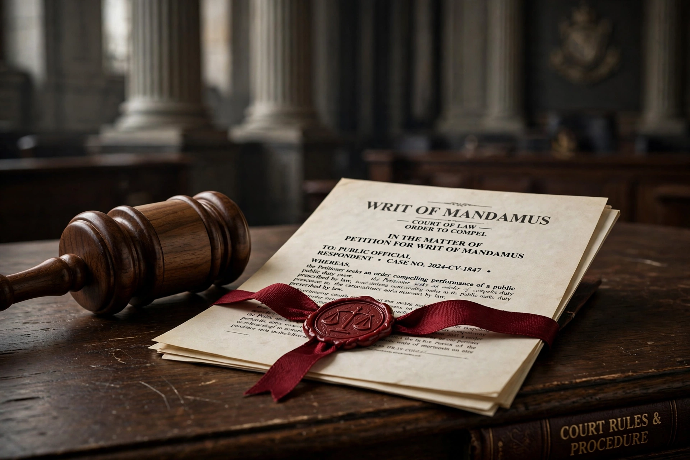

Mandamus is a judicial remedy in the form of an order from a court to any government, subordinate court, corporation, or public authority, to do some specific act which that body is obliged under law to do. The name is Latin for "we command".

| Type | Prerogative writ / judicial remedy |
|---|---|
| Purpose | Compel performance of a public duty |
Mandamus generally lies only where there is a clear legal right, a corresponding duty, and no other adequate remedy. It compels performance of a ministerial act, not the exercise of discretion in a particular way, though it can require that discretion be exercised.
In the United States, federal courts may issue writs under the All Writs Act, and the Supreme Court case Marbury v. Madison (1803) famously involved a petition for mandamus. In England and Wales it is now called a mandatory order. India and other Commonwealth jurisdictions retain mandamus as a constitutional remedy under writ jurisdiction.